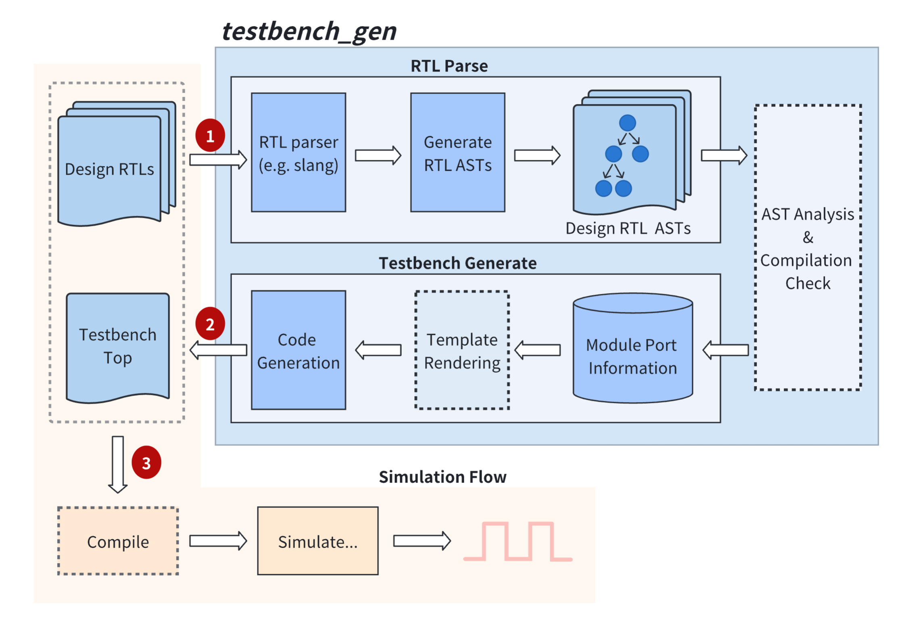

Testbench 自动生成流程
Verilua 中，Testbench 是全自动生成的 testbench_gen 工具实现（安装 Verilua 的时候会编译生成 testbench_gen），其核心功能包括顶层模块的例化、时钟驱动、波形控制等。具体工作流程如下图所示：

Testbench generate workflow
testbench_gen 底层使用的是 slang 进行 RTL 代码的解析，下面是 testbench_gen 的命令行参数（高亮的为常用的选项）：
Terminal testbench_gen( verilua@v2.0.0)
testbench_gen [ options] files...
--tt,--tbtop <top module name> testbench top module name
--dn,--dut-name <dut instance name> testbench dut inst name
--od,--out-dir <directory> output directory
--cs,--clock-signal <signal name> clock signal name
--rs,--reset-signal <signal name> reset signal name
--cc,--custom-code <file> input custom code <file>, will be inserted in the bottom of the testbench module
--ccs,--custom-code-str <string> input custom code <string>, will be inserted in the bottom of the testbench module
--cco,--custom-code-outer <file> input custom code <file>, will be inserted in the top of the testbench module
--ccso,--custom-code-str-outer <string> input custom code <string>, will be inserted in the top of the testbench module
--lm,--lua-meta-file <file> output lua meta file( type annotation file)
--fl,--filelist <file/filelist> input file or filelist
-p,--period <period value> clock period
--vb,--verbose verbose output
--co,--check-output check output
--dr,--dryrun do not generate testbench
-r,--regen force regeneration of testbench
--nd,--nodpi disable dpi generation
-h,--help Display available options
--std ( 1800 -2017 | 1800 -2023 | latest) The version of the SystemVerilog language to use
-I,--include-directory,+incdir <dir-pattern>[ ,...] Additional include search paths
--isystem <dir-pattern>[ ,...] Additional system include search paths
-D,--define-macro,+define <macro>= <value> Define <macro> to <value> ( or 1 if <value> ommitted) in all source files
-U,--undefine-macro <macro> Undefine macro name at the start of all source files
--max-include-depth <depth> Maximum depth of nested include files allowed
--libraries-inherit-macros If true, library files will inherit macro definitions from the primary source files. --single-unit must also be passed when this option is used.
--enable-legacy-protect If true, the preprocessor will support legacy protected envelope directives, for compatibility with old Verilog tools
--translate-off-format <common>,<start>,<end> Set a format for comment directives that mark a region of disabled source text. The format is a common keyword, a start word, and an end word, each separated by commas. For example, 'pragma,translate_off,translate_on'
--cmd-ignore <vendor_cmd>,<N> Define rule to ignore vendor command <vendor_cmd> with its following <N> parameters.
A command of the form +xyz will also match any vendor command of the form +xyz+abc,
as +abc is the command's argument, and doesn' t need to be matched.
--cmd-rename <vendor_cmd>,<slang_cmd> Define rule to rename vendor command <vendor_cmd> into existing <slang_cmd>
--ignore-directive <directive> Ignore preprocessor directive and all its arguments until EOL
--max-parse-depth <depth> Maximum depth of nested language constructs allowed
--max-lexer-errors <count> Maximum number of errors that can occur during lexing before the rest of the file is skipped
-j,--threads <count> The number of threads to use to parallelize parsing
-C <file-pattern>[ ,...] One or more files containing independent compilation unit listings. The files accept a subset of options that pertain specifically to parsing that unit and optionally including it in a library.
--max-hierarchy-depth <depth> Maximum depth of the design hierarchy
--max-generate-steps <steps> Maximum number of steps that can occur during generate block evaluation before giving up
--max-constexpr-depth <depth> Maximum depth of a constant evaluation call stack
--max-constexpr-steps <steps> Maximum number of steps that can occur during constant evaluation before giving up
--constexpr-backtrace-limit <limit> Maximum number of frames to show when printing a constant evaluation backtrace; the rest will be abbreviated
--max-instance-array <limit> Maximum number of instances allowed in a single instance array
--max-udp-coverage-notes <limit> Maximum number of UDP coverage notes that will be generated for a single warning about missing edge transitions
--compat vcs Attempt to increase compatibility with the specified tool
-T,--timing min| typ| max Select which value to consider in min:typ:max expressions
--timescale <base>/<precision> Default time scale to use for design elements that don't specify one explicitly
--allow-use-before-declare Don' t issue an error for use of names before their declarations
--ignore-unknown-modules Don't issue an error for instantiations of unknown modules, interface, and programs
--relax-enum-conversions Allow all integral types to convert implicitly to enum types
--relax-string-conversions Allow string types to convert implicitly to integral types
--allow-hierarchical-const Allow hierarchical references in constant expressions
--allow-toplevel-iface-ports Allow top-level modules to have interface ports
--allow-recursive-implicit-call Allow implicit call expressions to be recursive function calls
--allow-bare-value-param-assigment Allow module parameter assignments to elide the parentheses
--allow-self-determined-stream-concat Allow self-determined streaming concatenation expressions
--allow-merging-ansi-ports Allow merging ANSI port declarations with nets and variables declared in the instance body
--lint-only Only perform linting of code, don' t try to elaborate a full hierarchy
--disable-instance-caching Disable the use of instance caching, which normally allows skipping duplicate instance bodies to save time when elaborating
--disallow-refs-to-unknown-instances When using --ignore-unknown-modules, explicitly disallow references to ignored module instances by issuing an error
--top <name> One or more top-level modules to instantiate ( instead of figuring it out automatically)
-G <name>= <value> One or more parameter overrides to apply when instantiating top-level modules
-L <library> A list of library names that controls the priority order for module lookup
--defaultLibName <name> Sets the name of the default library
-W <warning> Control the specified warning
--color-diagnostics Always print diagnostics in color. If this option is unset, colors will be enabled if a color-capable terminal is detected.
--diag-column Show column numbers in diagnostic output
--diag-location Show location information in diagnostic output
--diag-source Show source line or caret info in diagnostic output
--diag-option Show option names in diagnostic output
--diag-include-stack Show include stacks in diagnostic output
--diag-macro-expansion Show macro expansion backtraces
--diag-abs-paths Display absolute paths to files in diagnostic output
--diag-hierarchy always| never| auto Show hierarchy locations in diagnostic output
--diag-json <file> Dump all diagnostics in JSON format to the specified file, or '-' for stdout
--error-limit <limit> Limit on the number of errors that will be printed. Setting this to zero will disable the limit.
--suppress-warnings <file-pattern>[ ,...] One or more paths in which to suppress warnings
--suppress-macro-warnings <file-pattern>[ ,...] One or more paths in which to suppress warnings that originate in macro expansions
--single-unit Treat all input files as a single compilation unit
-v,--libfile <file-pattern>[ ,...] One or more library files, which are separate compilation units where modules are not automatically instantiated
--libmap <file-pattern>[ ,...] One or more library map files to parse for library name mappings and file lists
-y,--libdir <dir-pattern>[ ,...] Library search paths, which will be searched for missing modules
-Y,--libext,+libext <ext> Additional library file extensions to search
--exclude-ext <ext> Exclude provided source files with these extensions
-f <file-pattern>[ ,...] One or more command files containing additional program options. Paths in the file are considered relative to the current directory.
-F <file-pattern>[ ,...] One or more command files containing additional program options. Paths in the file are considered relative to the file itself.
--dfa-unique-priority Respect the 'unique' and 'priority' keywords when analyzing data flow through case statements
--dfa-four-state Require that case items cover X and Z bits to assume full coverage in data flow analysis
--allow-multi-driven-locals Allow subroutine local variables to be driven from multiple always_comb/_ff blocks
--allow-dup-initial-drivers Allow signals driven in an always_comb or always_ff block to also be driven by initial blocks
--max-case-analysis-steps <steps> Maximum number of steps that can occur during case analysis before giving up
--max-loop-analysis-steps <steps> Maximum number of steps that can occur during loop analysis before giving up
多时钟配置
当设计包含多个时钟信号时，testbench_gen 提供了灵活的配置选项来处理不同的时钟场景：
时钟信号识别规则
testbench_gen 会按照以下优先级识别主时钟信号：
用户指定的时钟信号 ：通过 --clock-signal 参数明确指定的时钟信号名称默认时钟信号名称 ：按优先级自动识别以下信号名称：clockclock_iclkclk_ii_clk
如果设计中存在多个匹配的时钟信号，testbench_gen 会选择优先级最高的信号作为主时钟。
禁用内部时钟生成
对于多时钟设计，通常需要禁用 testbench_gen 的内部时钟自动生成功能，然后在用户代码中手动管理所有时钟信号。
在 xmake.lua 中配置：
-- 禁用内部时钟生成
set_values ( "cfg.no_internal_clock" , "1" )
多时钟使用示例
假设设计有以下时钟信号：
- sys_clk：系统主时钟
- uart_clk：UART 时钟
- mem_clk：内存时钟
配置方法：
-- 指定主时钟信号
add_values ( "cfg.tb_gen_flags" , "--clock-signal" , "sys_clk" )
-- 禁用内部时钟生成
set_values ( "cfg.no_internal_clock" , "1" )
然后在测试代码中手动生成所有时钟：
local sys_clk = dut . sys_clk : chdl ()
local uart_clk = dut . uart_clk : chdl ()
local mem_clk = dut . mem_clk : chdl ()
fork {
-- 系统时钟 100MHz
function ()
while true do
sys_clk : set ( 1 )
await_time ( 5 ) -- 5ns
sys_clk : set ( 0 )
await_time ( 5 )
end
end ,
-- UART 时钟 9.6MHz
function ()
while true do
uart_clk : set ( 1 )
await_time ( 52 ) -- 52ns
uart_clk : set ( 0 )
await_time ( 52 )
end
end ,
-- 内存时钟 200MHz
function ()
while true do
mem_clk : set ( 1 )
await_time ( 2.5 ) -- 2.5ns
mem_clk : set ( 0 )
await_time ( 2.5 )
end
end
}
时钟相关参数说明
--clock-signal <signal_name>：指定主时钟信号名称-p,--period <period_value>：设置主时钟周期（仅在使用内部时钟时有效）
内部时钟自动生成
默认情况下，testbench_gen 会自动在 RTL 侧生成时钟信号。这是 Verilua 的一项性能优化设计，将时钟生成放在 RTL 层面可以避免使用 Lua 任务来驱动时钟信号，从而减少任务切换的开销，提高仿真性能。
性能优势
RTL 侧时钟生成 （默认）：
- 时钟信号由 SystemVerilog 的 always 块直接驱动
- 无需 Lua 任务参与时钟切换
- 最小的仿真开销，最佳性能表现
Lua 侧时钟控制 （禁用内部时钟）：
- 需要创建专门的 Lua 任务来管理时钟信号
- 每个时钟边沿都需要 Lua-RTL 交互
- 增加任务切换开销，影响仿真速度, 但更加灵活
时钟周期配置
可以通过 tb_gen_flags 传递(xmake.lua)配置时钟周期：
add_values ( "cfg.tb_gen_flags" , "--period" , "15" )
设计考虑与权衡
内部时钟自动生成在以下方面具有特点：
单时钟优化 ：专为单时钟设计优化，提供最佳性能固定波形 ：生成标准的 50% 占空比方波，满足大多数应用需求高效稳定 ：RTL 层面的时钟生成更加稳定可靠简化设计 ：减少用户代码复杂度，专注于测试逻辑
选择建议
根据具体需求选择合适的时钟方案：
推荐使用内部时钟的场景 ：
- 单时钟设计，追求最佳仿真性能
- 标准时钟波形即可满足需求
- 对仿真速度有较高要求
- 简单到中等复杂度的测试场景
需要禁用内部时钟的场景 ：
- 多时钟设计，必须分别控制多个时钟信号
- 需要非标准时钟波形（可变占空比、复杂调制等）
- 时钟门控或动态时钟控制需求
- 异步时钟域间的精确时序控制
- 需要在运行时调整时钟参数
其他
Testbench 只在 HVL 场景下才需要自动生成，可以在 xmake.lua 文件中通过 add_values ( "cfg.tb_gen_flags" , ...)
add_values ( "cfg.tb_gen_flags" , "--ignore-unknown-modules" , "--verbose" )
默认情况下，testbench_gen 会生成两个文件，一个是 tb_top.sv，另一个是 other.sv，其中 tb_top.sv 是 Testbench 文件，other.sv 是留给用户自定义的文件。用户可以在 others.sv 中自行添加其他的内容，每次重新生成 Testbench 的时候如果 others.sv 存在，就不会重新生成或者覆盖，因此用户可以安全地在其中添加用户自定义的内容。 部分内容如下（假设 DUT 为 Design）：
tb_top.sv // -----------------------------------------
// user custom code
// use `--custom-code-outer/-cco <file>` to pass in the custom code file.
// |_ e.g. `testbench_gen [...] --custom-code-outer path/to/file`
// use `--custom-code-str-outer/-ccso <string>` to pass in the custom code string.
// |_ e.g. `testbench_gen [...] --custom-code-str-outer "`define a 1"`
// -----------------------------------------
module tb_top ;
// ...
reg clock ;
reg reset ;
initial begin
clock = 0 ;
reset = 1 ;
end
always # 10 clock = ~ clock ;
// ...
// -----------------------------------------
// reg/wire declaration
// -----------------------------------------
reg inc ; // Input
reg [ 7 : 0 ] test ; // Input
wire [ 7 : 0 ] value ; // Output
// ...
// -----------------------------------------
// DUT module instantiate
// -----------------------------------------
Design u_Design (
. clock ( clock ), // direction: In dataType: logic
. reset ( reset ), // direction: In dataType: logic
. inc ( inc ), // direction: In dataType: logic
. test ( test ), // direction: In dataType: reg[7:0]
. value ( value ) // direction: Out dataType: logic[7:0
); // u_Design
// ...
// -----------------------------------------
// other user code...
// -----------------------------------------
Others u_others (
. clock ( clock ),
. reset ( reset )
);
// -----------------------------------------
// user custom code
// use `--custom-code/-cc <file>` to pass in the custom code file.
// |_ e.g. `testbench_gen [...] --custom-code path/to/file`
// use `--custom-code-str/-ccs <string>` to pass in the custom code string.
// |_ e.g. `testbench_gen [...] --custom-code-str "reg a; initial a = 1;"`
// -----------------------------------------
endmodule
other.sv module Others (
input wire clock ,
input wire reset
);
// -----------------------------------------
// other user code...
// -----------------------------------------
// ...
endmodule